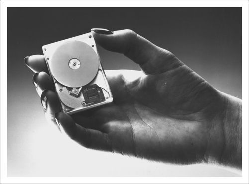

Differences in the forecastablity of sustaining versus disruptive technologies profoundly affected Hewlett-Packard’s efforts to forge a market for its revolutionary, disruptive 1.3-inch Kittyhawk disk drive. 1 In 1991, Hewlett-Packard’s Disk Memory Division (DMD), based in Boise, Idaho, generated about $600 million in disk drive revenues for its $20 billion parent company. That year a group of DMD employees conceived of a tiny, 1.3-inch 20 MB drive, which they code-named Kittyhawk. This was indeed a radical program for HP: The smallest drive previously made by DMD had been 3.5-inches, and DMD had been one of the last in the industry to introduce one. The 1.3-inch Kittyhawk represented a significant leapfrog for the company—and, most notably, was HP’s first attempt to lead in a disruptive technology.
For the project to make sense in a large organization with ambitious growth plans, HP executives mandated that Kittyhawk’s revenues had to ramp to $150 million within three years. Fortunately for Kittyhawk’s proponents, however, a significant market for this tiny drive loomed on the horizon: hand-held palm-top computers, or personal digital assistants (PDAs). Kittyhawk’s sponsors, after studying projections for this market, decided that they could scale the revenue ramp that had been set for them. They consulted a market research firm, which confirmed HP’s belief that the market for Kittyhawk would indeed be substantial.
HP’s marketers developed deep relationships with senior executives at major companies in the computer industry, for example, Motorola, ATT, IBM, Apple, Microsoft, Intel, NCR, and Hewlett-Packard itself, as well as at a host of lesser-known startup companies. All had placed substantial product development bets on the PDA market. Many of their products were designed with Kittyhawk’s features in mind, and Kittyhawk’s design in turn reflected these customers’ well-researched needs.
The Kittyhawk team concluded that developing a drive that met these customers’ requirements would be a demanding but feasible technological stretch, and they launched an aggressive twelve-month effort to develop the tiny device. The result, shown in Figure 7.2, was impressive. The first version packed 20 MB, and a second model, introduced a year later, stored 40 MB. To meet the ruggedness demanded in its target market of PDAs and electronic notebooks, Kittyhawk was equipped with an impact sensor similar to those used in automobile airbag crash sensors and could withstand a three-foot drop onto concrete without data loss. It was designed to sell initially at $250 per unit.
Although Kittyhawk’s technical development went according to plan, the development of applications for it did not. The PDA market failed to materialize substantially, as sales of Apple’s Newton and competing devices fell far short of aspirations. This surprised many of the computer industry experts whose opinions HP’s marketers had worked so hard to synthesize. During its first two years on the market, Kittyhawk logged just a fraction of the sales that had been forecast. The sales achieved might have initially satisfied startup companies and venture capitalists, but for HP’s management, the volumes were far below expectations and far too small to satisfy DMD’s need to grow and gain overall market share. Even more surprising, the applications that contributed most significantly to Kittyhawk’s sales were not in computers at all. They were Japanese-language portable word processors, miniature cash registers, electronic cameras, and industrial scanners, none of which had figured in Kittyhawk’s original marketing plans.
Figure 7.2 Hewlett-Packard’s Kittyhawk Drive

Source: Hewlett Packard Company. Used by permission.
Even more frustrating, as the second anniversary of Kittyhawk’s launch approached, were the inquiries received by HP marketers from companies making mass-market video game systems to buy very large volumes of Kittyhawk—if HP could make a version available at a lower price point. These companies had been aware of Kittyhawk for two years, but they reported that it had taken some time for them to see what could be done with a storage device so small.
To a significant extent, HP had designed Kittyhawk to be a sustaining technology for mobile computing. Along many of the metrics of value in that application—small size, low weight and power consumption, and ruggedness—Kittyhawk constituted a discontinuous sustaining improvement relative to 2.5-and 1.8-inch drives. Only in capacity (which HP had pushed as far as possible) was Kittyhawk deficient. The large inquiries and orders that finally began arriving for the Kittyhawk, however, were for a truly disruptive product: something priced at $50 per unit and with limited functionality. For these applications, a capacity of 10 MB would have been perfectly adequate.
Unfortunately, because HP had positioned the drive with the expensive features needed for the PDA market rather than designing it as a truly disruptive product, it simply could not meet the price required by home video game manufacturers. Having invested so aggressively to hit its original targets as defined by the PDA application, management had little patience and no money to redesign a simpler, defeatured 1.3-inch drive that fit the market applications that had finally become clear. HP withdrew Kittyhawk from the market in late 1994.
The HP project managers concede in retrospect that their most serious mistake in managing the Kittyhawk initiative was to act as if their forecasts about the market were right, rather than as if they were wrong. They had invested aggressively in manufacturing capacity for producing the volumes forecast for the PDA market and had incorporated design features, such as the shock sensor, that were crucial to acceptance in the PDA market they had so carefully researched. Such planning and investment is crucial to success in a sustaining technology, but, the managers reflected, it was not right for a disruptive product like Kittyhawk. If they had the opportunity to launch Kittyhawk all over again, they would assume that neither they nor anyone else knew for sure what kinds of customers would want it or in what volumes. This would lead them toward a much more exploratory, flexible approach toward product design and investment in manufacturing capacity; they would, given another chance, feel their way into the market, leaving enough resources to redirect their program if necessary and building upon what they learned on the way.
Hewlett-Packard’s disk drive makers are not the only ones, of course, who behaved as if they knew what the market for a disruptive technology would be. They are in stellar company, as the following case histories show.